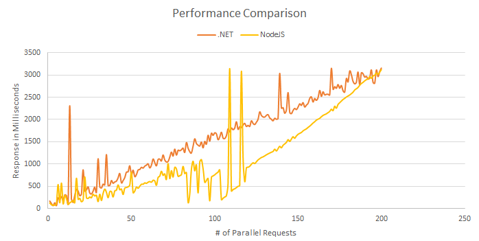
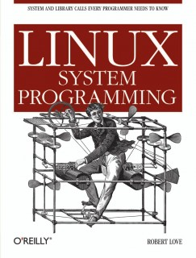

Node.js
In-½-Depth
Created by Vsevolod Strukchinsky / @floatdrop
Overview
What is Node.JS
Node.js
- Server-side
- JavaScript framework
- which is Asynchronous
Examples
-
Hello world:
console.log('hello world'); -
Hello world server:
require("http").createServer( function (request, response) { response.end("Hello World"); }).listen(8080);
Web server performance
Architecture
(old version)

- JavaScript engine
- which is Fast
- and open source
Benchmark
Counting 5000 primes
C# Code:
public class Primes
{
public int prime_count;
public int[] primes = new int[5000];
public int getPrimeCount () { return this.prime_count; }
public int getPrime (int i) { return this.primes[i]; }
public void addPrime (int p) { this.primes[this.prime_count++] = p; }
public bool isDivisible(int i, int by) { return (i % by) == 0; }
public bool isPrimeDivisible(int candidate) {
for (int i = 1; i < this.prime_count; ++i) {
if (this.isDivisible(candidate, this.primes[i])) return true;
}
return false;
}
}
public static class Programm {
public static void Main() {
Primes p = new Primes();
int c = 1;
while (p.getPrimeCount() < 5000) {
if (!p.isPrimeDivisible(c)) {
p.addPrime(c);
}
c++;
}
System.Console.WriteLine(p.getPrime(p.getPrimeCount() - 1));
}
}Results
C++
|
0.09
C#
|
0.12
Java
|
0.17
Python
|
31
Ruby
|
?
JavaScript (V8)
|
0.11
Source code of benchmarks are here
Asynchronous pattern
Costs of input/output operations
- L1 — 3 cycles
- L2 — 14 cycles
- RAM — 250 cycles
- DISK — 41 000 000 cycles
- NETWORK — 240 000 000 cycles
We waste time on waiting for disk or network read!
(if we use synchronized methods)
What Your Computer Does While You Wait
How to solve time wasteing?
Threads
How bad is it?
It depends
Python vs Threads
(little story)
def count(n):
while n > 0:
n -= 1
t1 = Thread(target=count,args=(1000000,))
t1.start()
t1.join()
t2 = Thread(target=count,args=(1000000,))
t2.start()
t2.join()
0.13 s
Python vs Threads
(little story)
def count(n):
while n > 0:
n -= 1
t1 = Thread(target=count,args=(1000000,))
t1.start()
t2 = Thread(target=count,args=(1000000,))
t2.start()
t1.join(); t2.join()
0.26 s
Threads
Thread creation is memory expensive
(type `ulimit -a | grep stack`).
Context switching is not free
Memory battle

Is there solution?
Obviously yes, nginx using it :)
Imagine queue that holding incoming events and pointers to code that handle them

Source of images
Instead of this

Or this

We doing this

LIBUV
- Multiplatform wrapper
- written on C++
- provides non-blocking operations and much more
Long long time ago
(Before PCI)
CPU took a work to copy bytes from FDD/HDD to memory.
And this was bad
Direct Memory Access
Devices can read or write from memory/or another device without using CPU
IOCP/epoll/kevent
Now system can notify your process, when device is ready, or file is readed in memory.

LIBUV Guts - event loop
int uv_run(uv_loop_t* loop, uv_run_mode mode) {
r = uv__loop_alive(loop);
while (r != 0 && loop->stop_flag == 0) {
uv__update_time(loop);
uv__run_timers(loop);
uv__run_idle(loop);
uv__run_prepare(loop);
uv__run_pending(loop);
loop(uv__io_poll, timeout);
uv__run_check(loop);
uv__run_closing_handles(loop);
r = uv__loop_alive(loop);
if (mode & (UV_RUN_ONCE | UV_RUN_NOWAIT)) break;
}
}static int uv__loop_alive(uv_loop_t* loop) {
return uv__has_active_handles(loop) ||
uv__has_active_reqs(loop) ||
loop->closing_handles != NULL;
}